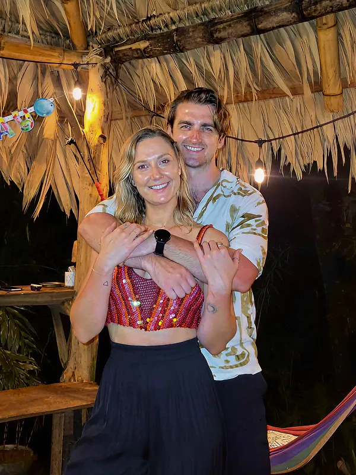
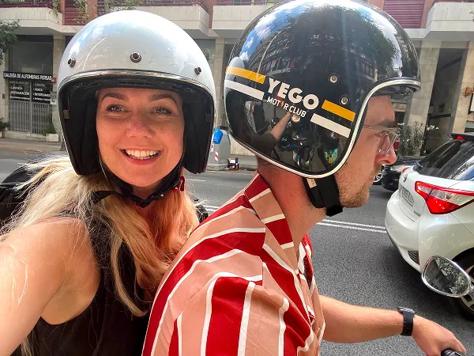
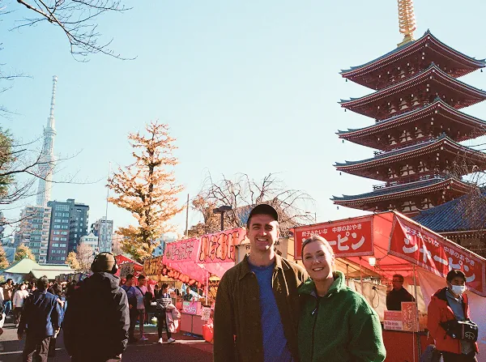
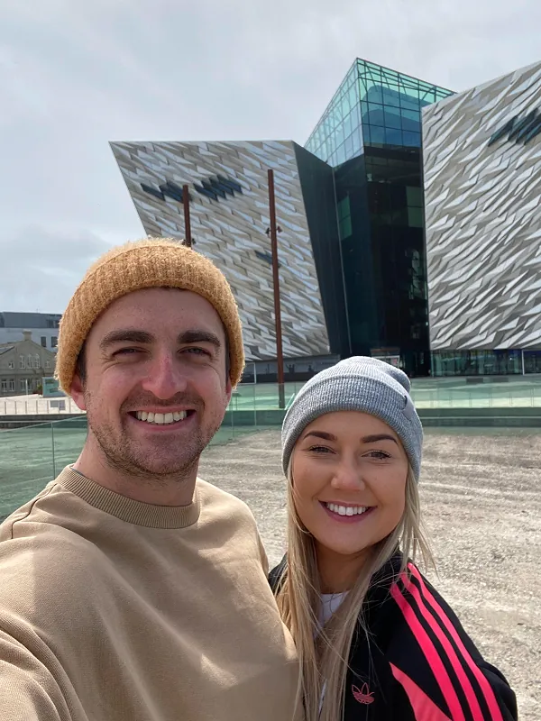
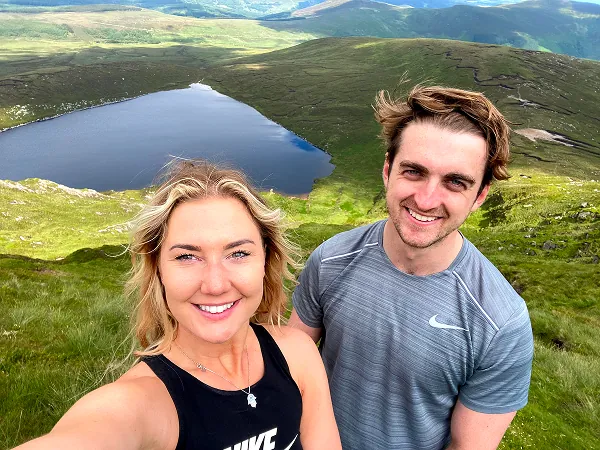
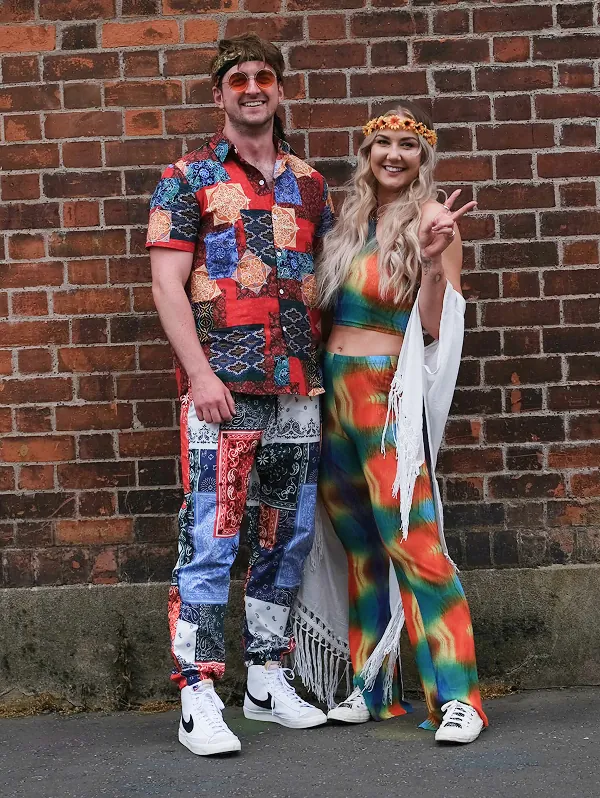
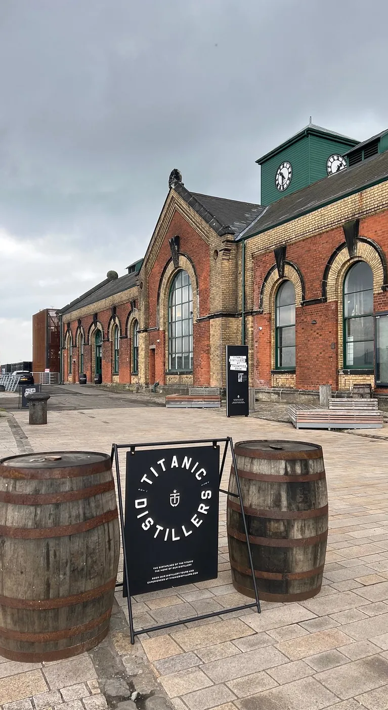
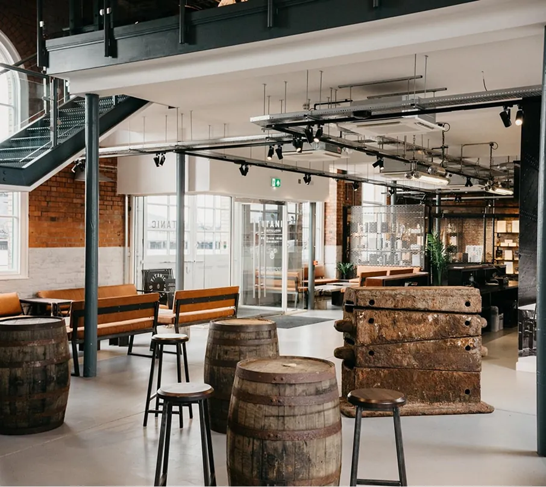
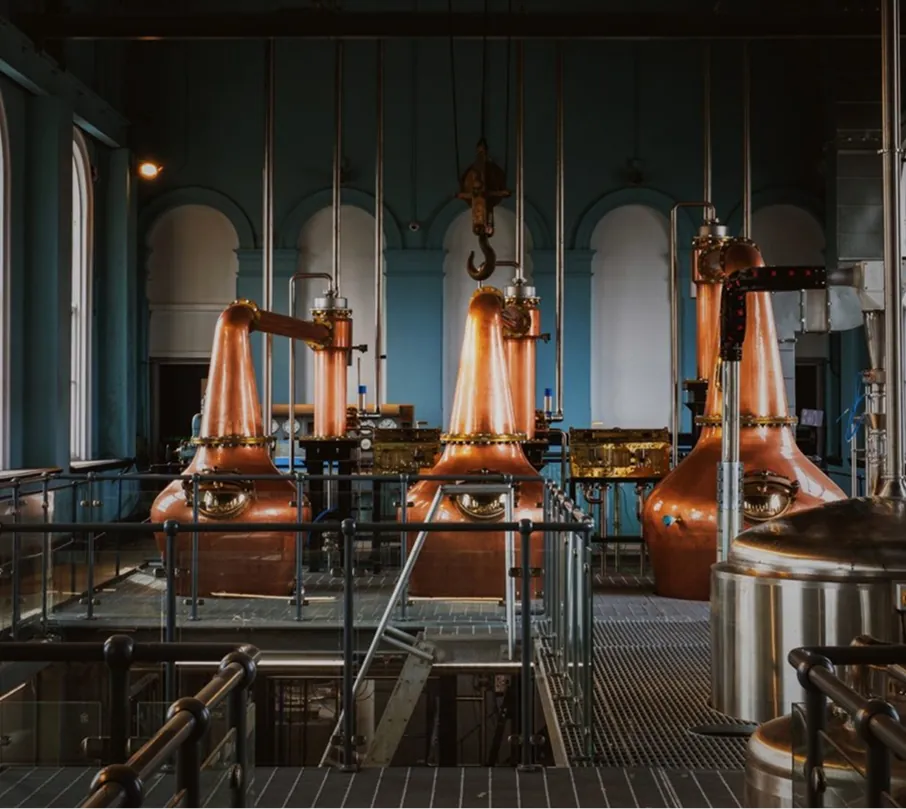

15:00
Start
Kicking off with a few wee drinks & a bit of craic.
Andrew & Tamlyn's
05.09.2026
Titanic Distillers, Belfast
private event







How we got here
It was February 2021. Two phones get a Hinge notification at the same moment. We’d matched. But it was lockdown. Nowhere to actually go, so we spent the next two months as penpals. A few weeks in, the chatting started to feel like waiting.
The day finally comes. A bubblegum blue Twingo pulls up at Lanyon Station to collect Andrew. Our first time in the same place, neither of us can stop smiling. That weekend turns into another, and another, and the back-and-forth between cities becomes a routine.
Eight months after that first train, we move to Berlin. A big leap. We both want the adventure and the challenge. Settling in took time. Building a life from scratch in a new land, with a new culture in a new language. The unglamorous work no one sees, doing it together. April 2022, we land in Friedrichshain, and stay.
Four years on, it’s home. It’s home, because of who’s in it. The friends and family who came to visit, who kept up despite the distance, who showed up when it counted. The people we’ve met here, who turned a new city into a home.
March of this year. A Dublin beach, just out of the sea. The water still, the air fresh, only sounds are the waves and the seagulls overhead. Andrew asks. Tamlyn says yes. Just like that first day at Lanyon, neither of us can stop smiling.
…so we’re bringing it all back to Belfast for a celebration…
Venue
One of Belfast’s most extraordinary spaces, and the home of our very long, very loud Saturday.
Titanic Distillers sits inside the historic distillery, the very building that drained the dry dock where the Titanic was fitted out before her maiden voyage in 1912. Now beautifully restored, it’s Belfast’s first working whiskey distillery in nearly 90 years.
The dock outside is 850 feet long, purpose-built for the largest ships ever made. The air is thick with history and great Irish whiskey.



Lots of craic with the people we love most.
Start
Kicking off with a few wee drinks & a bit of craic.
Food & Drinks
Some grub & more drinks…maybe start dancing.
Music & Dancing
More dancing with DJ Bobby Analog hitting the decks at night.
Finish
The end. Unless someone offers a gaff party? ;)
Inspo
Smart casual. Wear something you feel good in, but no need for black tie or anything formal. We’d rather see you dancing than fussing with a collar.
See the vibeWeather
Saturday 5 September 2026
19° / 12°C
Loosely based on historical data… but it’s Ireland. Who the fuck knows, it could be four seasons in one day. Let’s pray for a heatwave.
Throw a tune in. The ones that always work. The ones ye can’t sit still to. Belters, crackers, stompers, some absolute fuckin’ gems.
Add to the mixtape